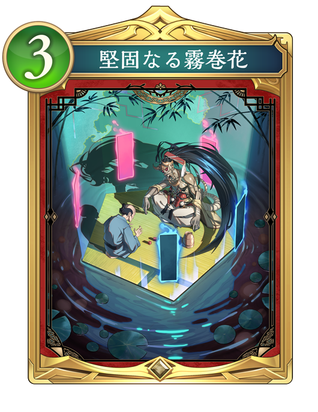
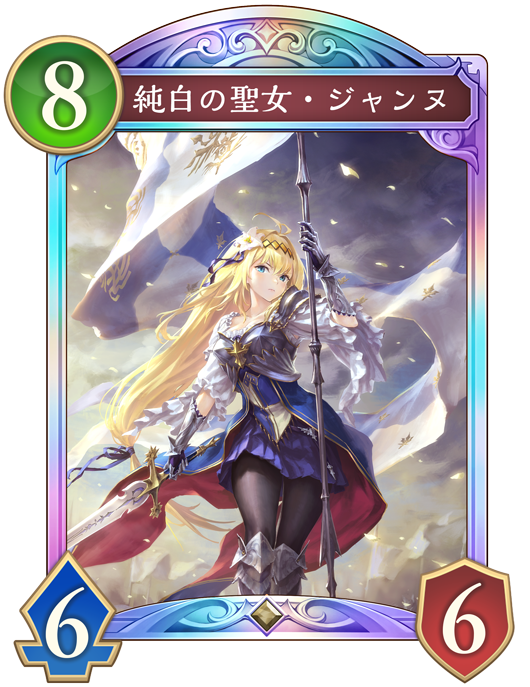
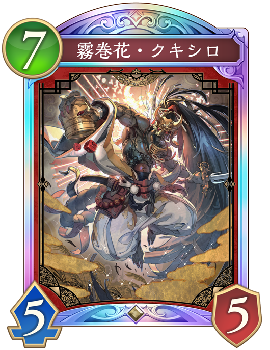

Q. 次のターンに予測できる相手の行動で危険なものは？

「堅固なる霧巻花」と「レ・フィーエの宝石」
危険度：💀💀
ドロー効果が「霧巻花・クキシロ」のクレストでそのまま盤面展開に繋がるため、これらの2ドローは強い。

純白の聖女・ジャンヌ
危険度：💀💀💀💀
ファンファーレで盤面全体に6ダメージを与え、自分の場のフォロワーが攻撃力+2、体力+4される。 「霧巻花・クキシロ」のクレストで出てきたフォロワーが、攻撃力+2、体力+4され、「ホーリーファルコン」が出た場合疾走を持っているためリーダーにダメージが出てしまう。

霧巻花・クキシロ
危険度：💀💀💀
ファンファーレで手札2枚を戻して2枚ドローするので、クレストが2回働く。 突進を持っており、除去にも対応できる。
 干絶の顕現・ギルネリーゼ
干絶の顕現・ギルネリーゼ
危険度：💀
体力を回復され、盤面を取られるががそこまでない。 体力が2以上ある場合に攻撃力を上げるために使われることもある。
予想の説明(クリックすると表示されるよ)
この状況では相手は先攻9ターン目で、8コストである「純白の聖女・ジャンヌ」がプレイされる可能性が高い。
「純白の聖女・ジャンヌ」はファンファーレで盤面全体に6ダメージを与え、自分の場のフォロワーが攻撃力+2、体力+4される。
そのため、ダメージを受けても倒されない場を作ることが有効である。